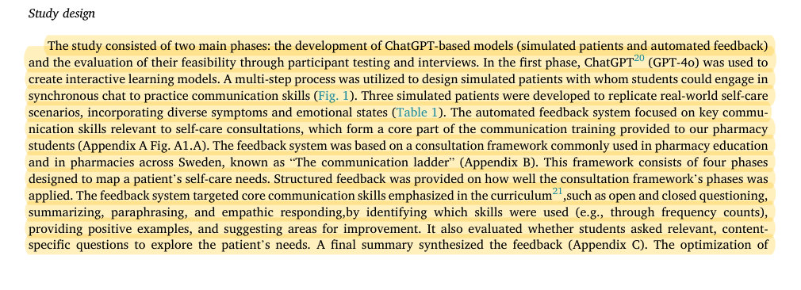
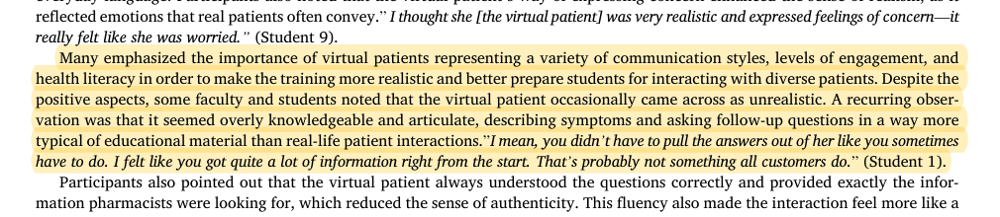
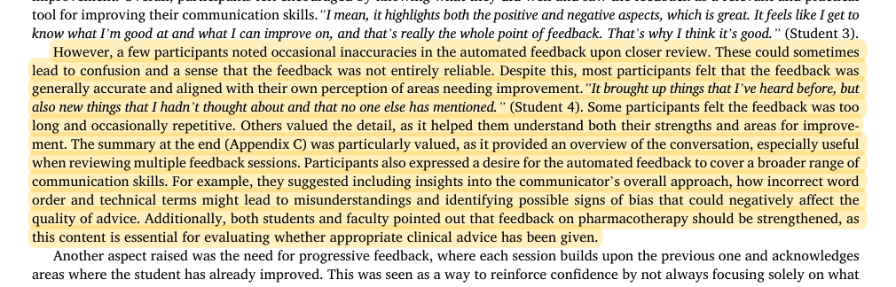
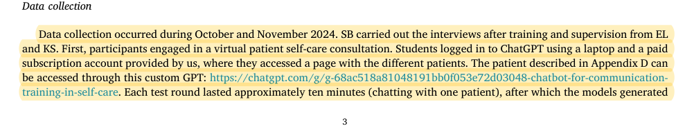
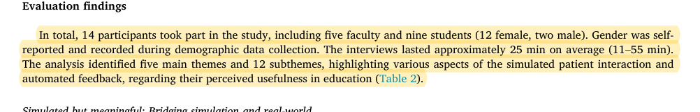

R03 · Virtual patients and OSCEs
An overly knowledgeable pharmacy patient changes the task facing the learner
Development and evaluation of AI chatbot tool for written communication training in self-care: Experiences of pharmacy students and faculty
S. Bakhaya, E. C. Lehnbom, M. A. de Carvalho Filho, K. Y. Ma, K. Svensberg · 2026
Currents in Pharmacy Teaching and Learning 18:102503; published online in 2025
What the study investigates
The study examines whether an LLM-based simulated patient and automated feedback can support synchronous written self-care consultations by pharmacy students. Pharmacy communication, rather than generic medical question answering, is the direct connection to our study.
How it was studied
GPT-4o was used to create three patient simulations and a communication-feedback model. Prompts were iteratively refined using a communication-ladder training framework. Nine pharmacy students and five faculty members tested the tool and took part in semistructured interviews. The authors used thematic analysis and, before student testing, preliminarily compared AI and faculty feedback on six conversations.
Findings
Participants appreciated emotional expression and structured feedback, but reported that patients could be excessively knowledgeable and disclose too much at the start. A few participants found inaccuracies in feedback; students and faculty both wanted stronger pharmacotherapy feedback. Most still found the feedback useful overall. The role findings appear in “Variation matters” on PDF page 5; feedback findings appear in “Feeling seen” on the same page.
Limits of the evidence
This is a qualitative study. It does not estimate disclosure-error rates or grading accuracy, or establish a causal relationship between disclosure and feedback errors. Perceived fairness or consistency is not statistical agreement with an independent faculty reference.
How it informs DualGraph-OSCE
The EGJ engine records whether information was elicited by the learner, volunteered by the patient, or supplied after a system prompt. A normal patient question followed by a correct explanation in the diuretics station need not reduce a grade; an authorized clinical hint in the onychomycosis station may trigger a specified cap. Consequences must follow station rules, rather than a universal “prompting loses marks” rule.
Where to cite it
Introduction: the documented role-control problem. Method: why actual prompts and disclosure events are recorded.
Possible manuscript wording
Participants in pharmacy communication training have reported overly knowledgeable simulated patients and premature information disclosure. Factual correctness should therefore be assessed together with the conditions under which a patient may disclose information.
[R03·1]This is a manuscript-specific paraphrase, not a quotation from the source. The excerpts below define what the citation supports. The proposed method and its expected benefits are not findings of the cited paper.
Source passages and precise locations
Page numbers refer to physical pages in the saved original PDF, including any repository cover sheets. Compilation page numbers are listed separately. Yellow highlighting marks the passage used for the argument.
R03-E1System development and study design
Original PDF page 2. Highlight compilation page 21. The highlight identifies the passage used here; consult the full original page for its context.

R03-E2Interview findings on overly knowledgeable patients
Original PDF page 5. Highlight compilation page 24. The highlight identifies the passage used here; consult the full original page for its context.

R03-E3Feedback inaccuracies and insufficient pharmacotherapy feedback
Original PDF page 5. Highlight compilation page 24. The highlight identifies the passage used here; consult the full original page for its context.

R03-E4Ten-minute trials and immediate feedback
Original PDF page 3. Highlight compilation page 22. The highlight identifies the passage used here; consult the full original page for its context.

R03-E5Nine students, five faculty members, and the purpose of the experience study
Original PDF page 4. Highlight compilation page 23. The highlight identifies the passage used here; consult the full original page for its context.
